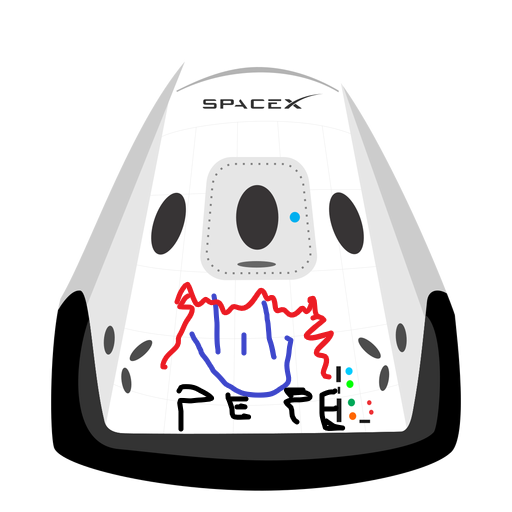

Hyperblog
Tu blog de confianza
Aqui comienza la historia de un gran proyecto whassapp
Y este es el párrafo de inicio donde vamos a explicar las cosas incríbles que se pueden hacer con ramas

Los blogs son la mejor forma de compartir información y tus ideas. Mucho mas que ir a conferencias o salir en Youtube. Excepto si eres un rockstar. Pero estadísticamente no lo eres.... por ahora.
Suscribete y dale like y compartilo con tus amigos que son unos crack re buenardo